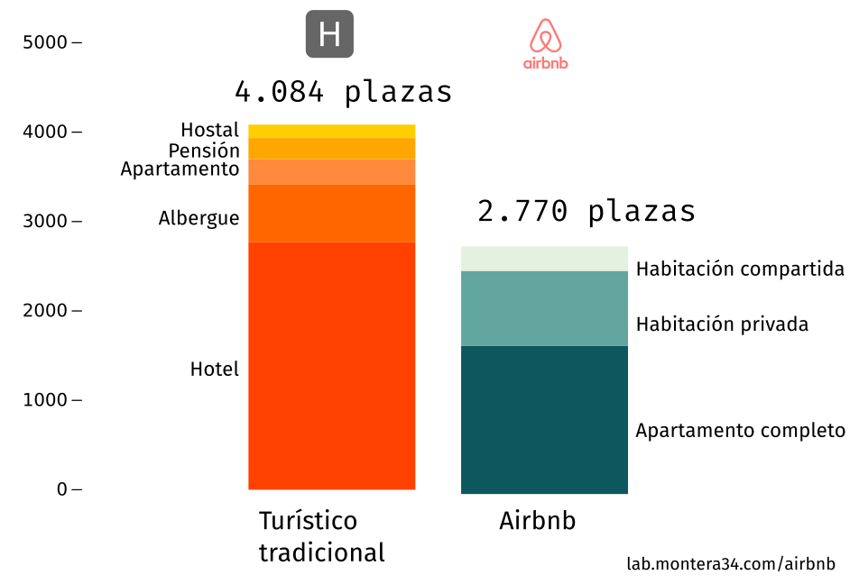

En esta sección estudiamos el número total de plazas del alquiler turístico de Airbnb con las plazas de la oferta turística tradicional.
| Cantidad | Plazas | |
|---|---|---|
| Alojamientos "tradicionales" | 186 | 4.084 |
| Albergues | 7 | 281 |
| Apartamentos | 126 | 645 |
| Hostal | 10 | 150 |
| Hotel | 21 | 2.772 |
| Pensión | 22 | 236 |

En el municipio de Pamplona hay un total de 4.084 plazas dentro de la oferta de albergues, apartamentos, hostales, hoteles y pensiones. En Airbnb se ofertan 2.770 plazas de las cuales 1.656 se alquilan como apartamentos completos, 840 como habitaciones privadas y 47 como habitaciones compartidas.
Si no consideramos otras plataformas además de Airbnb (como Homeway u Only Apartaments) la oferta de alojamientos turístico en Pamplona - Iruña se distribuye en un 60% en hoteles, apartamentos, hostales, albergues y pensiones y un 40% en Airbnb.
Nota tabla: los datos sobre la oferta turística tradicional son de 2015 e incluyen en ellos Apartamentos turísticos, por lo que algunas plazas podrían estar duplicadas.
Pincha en la imagen para ver el mapa interactivo.